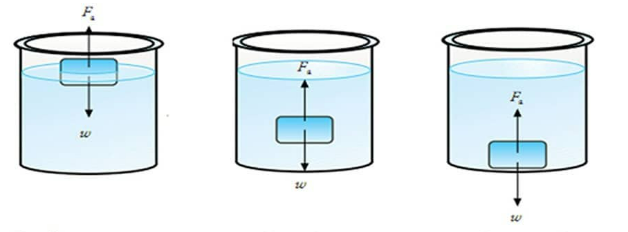

Adanya gaya apung ini menyebabkan suatu benda terapung, melayang, dan tenggelam di dalam air. untuk lebih jelasnya, perhatikan gambar berikut
Sebuah benda terapung apabila gaya apung lebih besar dari gaya berat benda, melayang apabila gaya apung sama besar dari gaya berat benda dan tenggelam didalam air apabila gaya apung lebih besar dari gaya berat benda.